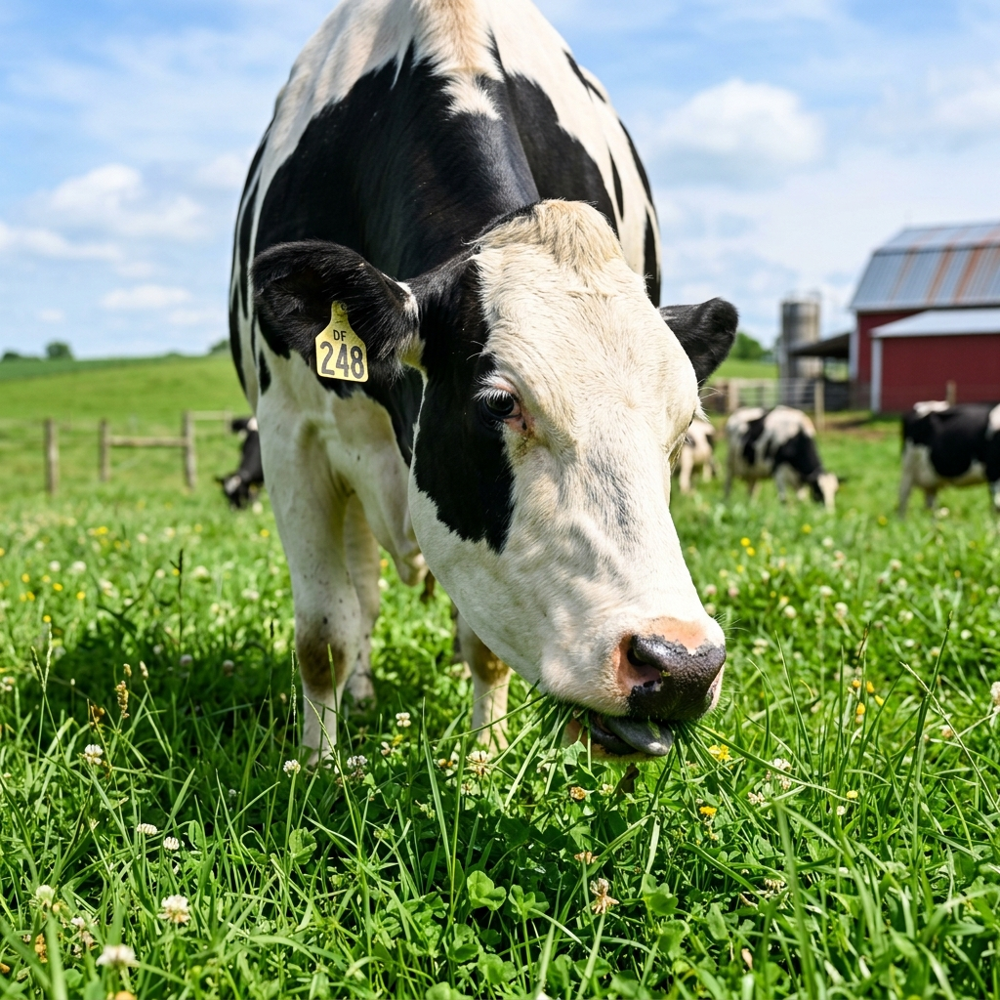
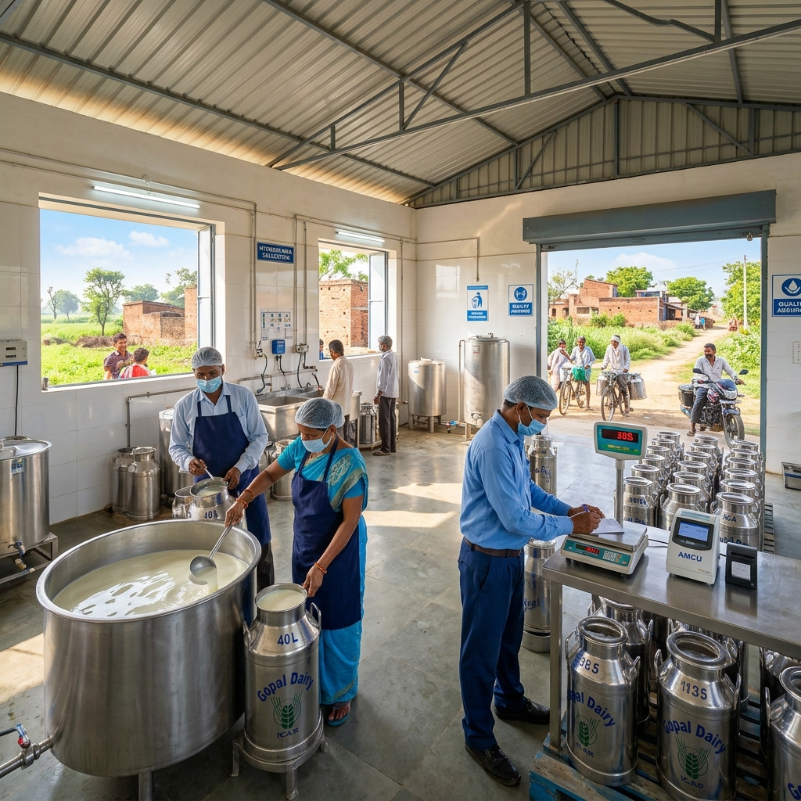
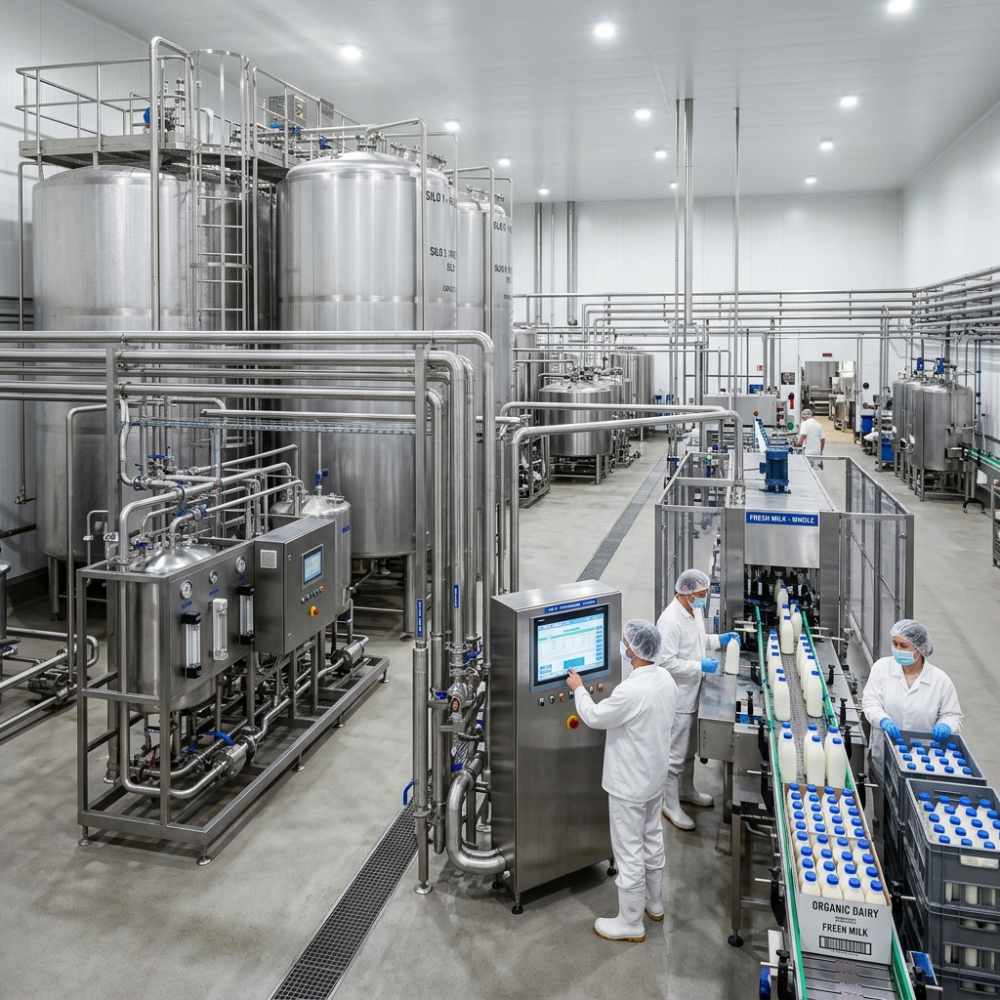

Pitambara Dudh Dairy is committed to delivering fresh, hygienic, and premium-quality dairy products directly to customers. With years of experience and dedication, we provide pure milk, authentic desi ghee, fresh paneer, and nutritious curd while maintaining the highest quality standards.

Our journey starts in our lush green pastures where cows and buffaloes graze freely under natural conditions. A healthy diet consisting of natural grasses, grains, and mineral supplements ensures that the milk produced is thick, creamy, and high in nutrition values.
We maintain pristine sanitization on our farms, hosting organic ventilation structures to guarantee happy, stress-free cattle yielding wholesome products.

Every morning and evening, fresh milk is collected at sanitary terminals. Experienced professionals oversee the collection, using clean stainless steel cans and automated transfer equipment to prevent air contact and keep bacteria levels at absolute zero.
Each batch undergoes immediate temperature checks to lock in the fresh taste and prevent premature fermentation, maintaining a reliable cold supply chain.

At our processing plant, the milk undergoes standard pasteurization and homogenization. Strict quality indicators evaluate fat and solids-not-fat (SNF) metrics to assure traditional taste and health consistency.
All packaging is handled under isolated, clean-room parameters. Whether it is pasteurized liquid milk in food-grade pouches, golden Desi Ghee jars, or vacuum-sealed paneer, every unit is packed to seal in purity and freshness.
The visionary minds behind Pitambara Dudh Dairy, steering the brand toward absolute purity and family trust.